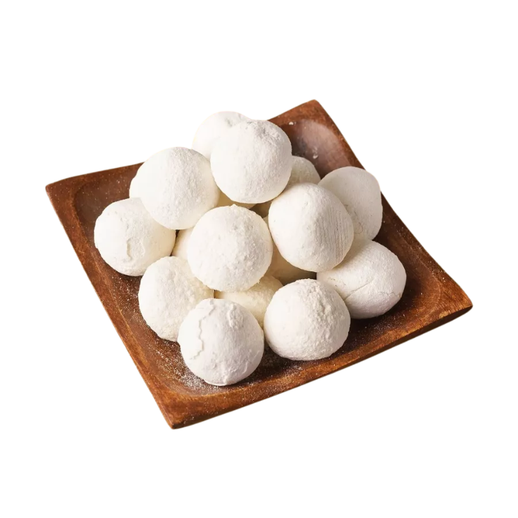

Qurt
Qurt is made from strained yogurt, drained buttermilk (in particular, drained qatiq) or drained sour milk by shaping it and letting it dry. It can be made in a variety of forms: rolled into balls, sliced into strips, and formed into chunks.
